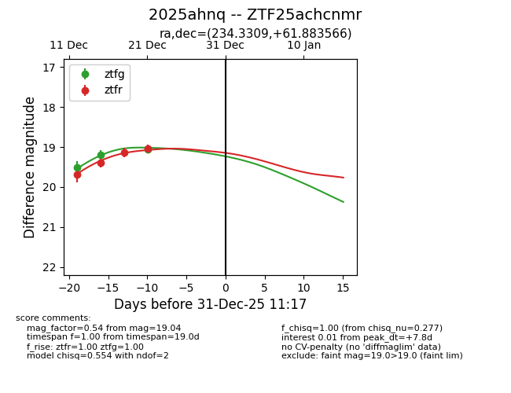
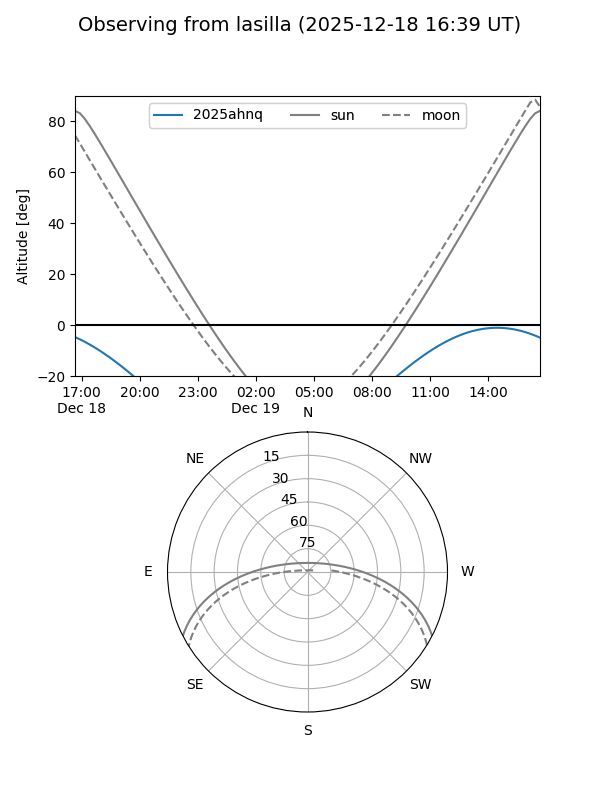
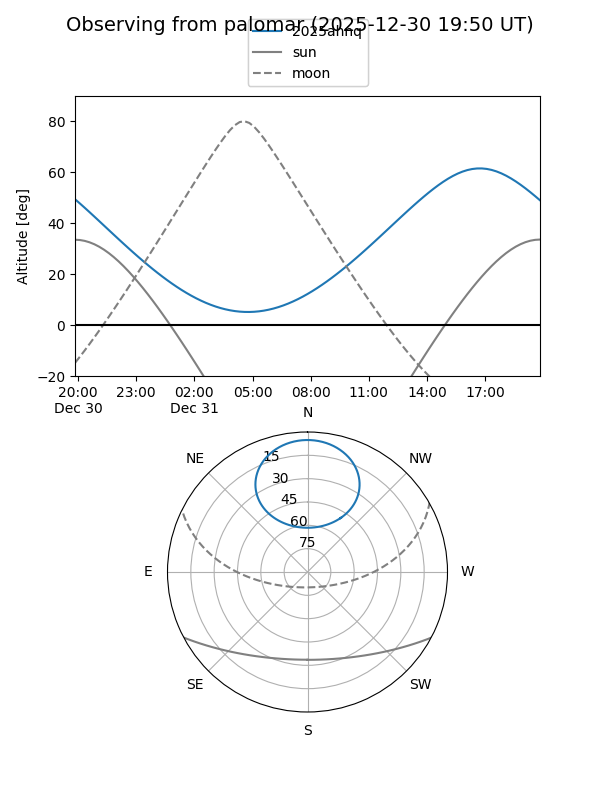
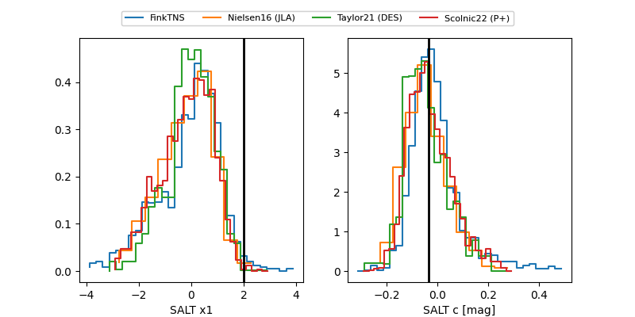

2025ahnq
Target 2025ahnq at 2025-12-19 06:04
Aliases and brokers:
FINK: fink-portal.org/ZTF25achcnmr
Lasair: lasair-ztf.lsst.ac.uk/objects/ZTF25achcnmr
ALeRCE: alerce.online/object/ZTF25achcnmr
TNS: wis-tns.org/object/2025ahnq
YSE: ziggy.ucolick.org/yse/transient_detail/2025ahnq
alt names
ZTF25achcnmr (ztf,fink_ztf)
2025ahnq (tns,yse)
Coordinates:
equatorial (ra, dec) = 234.3309,+61.88357
equatorial (HMS+DMS) = 15:37:19.43,+61:53:00.84
galactic (l, b) = (96.3581,+45.76129)
Flags:
Photometry:
last ztfg=19.19, ztfr=19.13
2 ztfg, 3 ztfr detections
Lightcurve

Visibility


Additional plots
